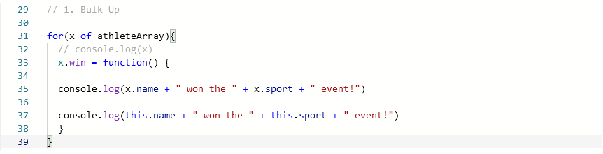
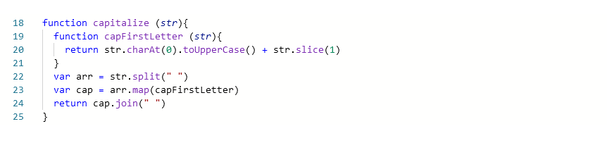
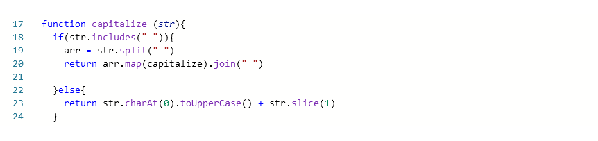

Stuck
I got quite stuck on the Olympics, bulk up problem. After a few hiccups getting the code clean and syntax right, it wasn’t working when I was convinced it should be working fine. I first checked the console message and the test was coming up saying:
‘Error: "Hugh won the jousting event!" shouted the commentator. Hmm, that wasn't quite what their co-host expected them to say..’
I was very confused and frustrated because this is exactly what was meant to be coming up for my hugh object. I couldn't work out what the problem was. I then tried to cheat and tried to console log out exactly what I expected the answer to be, for myself, instead of using object.name and object.sport and that still didn’t work. I was slightly confused as to why the test would be for my second object and not my first object, robbie. After a lot of confusion, of thinking my answer was exactly what was asked for, and double-checking instructions and spelling and grammar mistakes, I then decided the test must have been checking both my objects, and for whatever reason my first object was sending back what I expected for my second object. So I did a bunch of googling and got very confused, I stumble across the keyword ‘this’, so I decided to try it, and it worked.

I felt pretty terrible during it, because I couldn’t understand why my code wasn’t working, and even worse when it seemed it was giving back the exact message it asked for. I think what my testing has uncovered is that sometimes with for loops in JavaScript, the value of the current loop’s variable isn’t always passed through to what ever function you may be looping, but the actual variable x is passed on. So when you later call that function outside of the loop, it has a look at what the loop value is currently (Usually the last value in the loop, as the loop has finished running and is on the end value) and will send that information instead of what the value is when it was called inside the loop.
Elegant ?? Maybe
The first time I tried the problem in built-in-methods, capitalize, where you try and use the .map() function, I just declared another function, capFirstLetter, inside the capitalize function. I wasn’t very happy with this, it felt wrong making a whole other function inside, just to solve this, I guess I could have declared it outside of the function, but both versions I thought that it defeated the purpose of the exercises in making it two different functions instead of one.

The next time I went through and repeated it, I thought since I’m already making a function, why don’t I make that function do both of the things. So, I made the function check to see if there were any spaces in the string, if not, it was a single word so it returned that word with a capitalised first letter, if there were spaces in the string then the string split on a space into an array, and then used recursion to map the array into the function.

After having trouble with the freecodecamp recursion, it felt really good to get this problem solved with recursion. Although I’m not sure if it is easier to understand with recursion or not, it helped show me some of the thinking involved when refactoring code, how to look at it some code and approach it differently.